Generalization and the MAUP
Essential concepts for generalization and the MAUP. This section builds from Concepts of Scale and Resolution.
Learning Objectives
- Understand Generalization
- Understand MAUP
- Understand how these are unavoidable scenarios
Generalization
Map Generalization:
- Unavoidable approximation of real entities represented on a map, which increases with smaller-scale maps.
- Geometric and attribute details needed has to be defined.
- Decisions, methods (and data) for collection and representation of shapes and locations define the limits of what can be seen on a map.
Generalization is a consequence of decreasing scale of a map ude to time, budget, and methods constraints.
Aggregating / Disaggregating:
- When zooming out, or decreasing resolution, aggregation occurs.
- When zooming in, or increasing resolution, disaggregation occurs.
Scale and Map Generalization
There are different levels of feature generalization in maps of different scales. This introduces the idea of geometry elimination and geometry smoothing at changing scales. In both cases, we still want to preserve information.
Principals of Generalization
- Smaller Scales \(\rightarrow\) More Generalized \(\rightarrow\) Shorter Lines
- Machine learning can be used to preserve features during generalization
- Smaller Scales \(\rightarrow\) More Generalized \(\rightarrow\) Less Perimeter
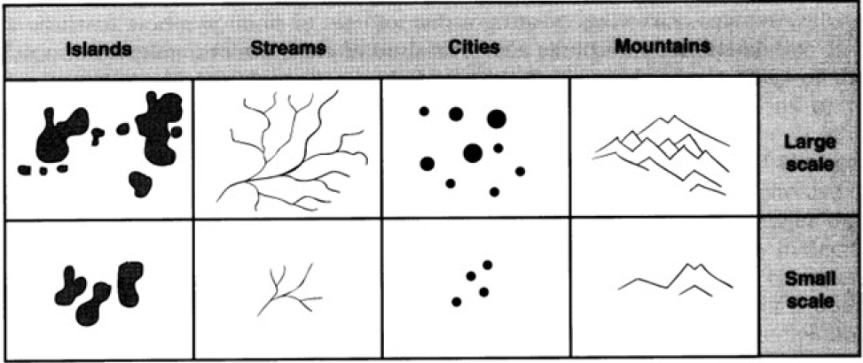
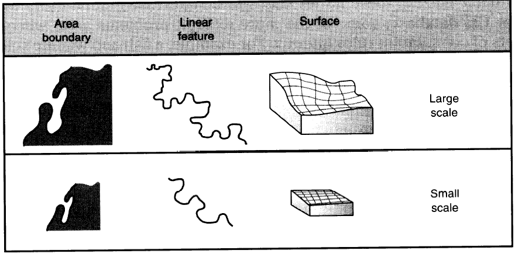
Forms of Feature Generalization
- Truth: entity in reality (example group of islands \(\rightarrow\) multiple polygons with many vertices)
- Fused: multiple high resolution polygons into single polygon
- Simplified: multiple polygons with less vertices
- Displaced: features like roads or streams with a greater null buffer from group of polygons
- Omitted: smaller features (small islands) removed
- Exaggerated: features like roads or streams with a greater actual buffer from group of polygons
- Patches: essentially a fuse with the individual entities still present (group of islands called an archipelago while not mentioning the individual islands)
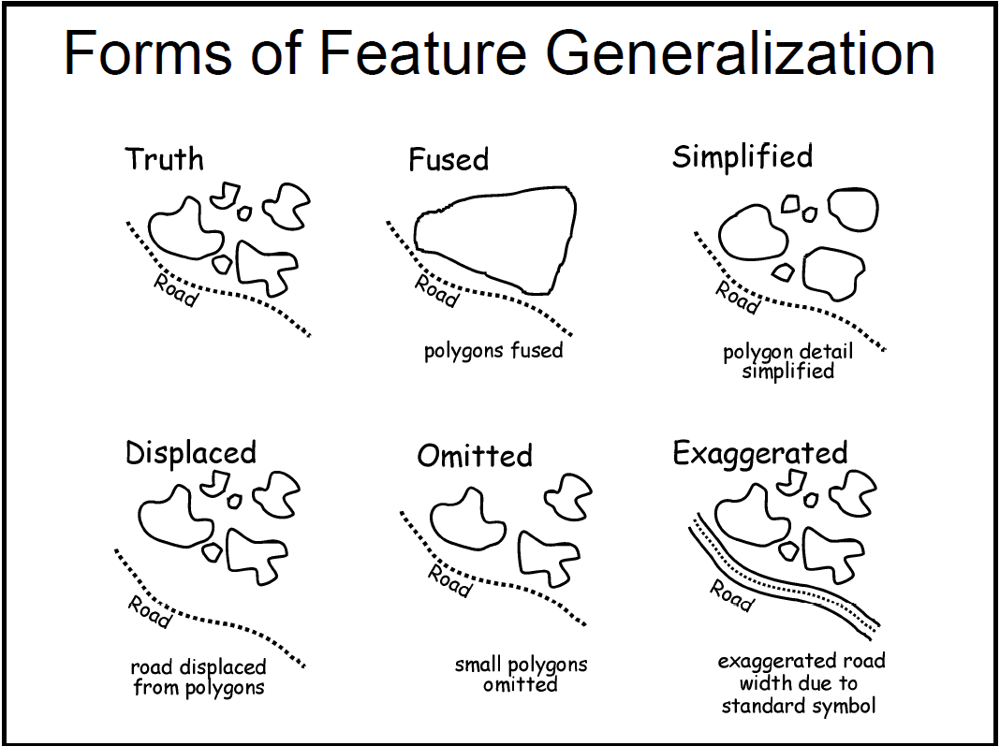
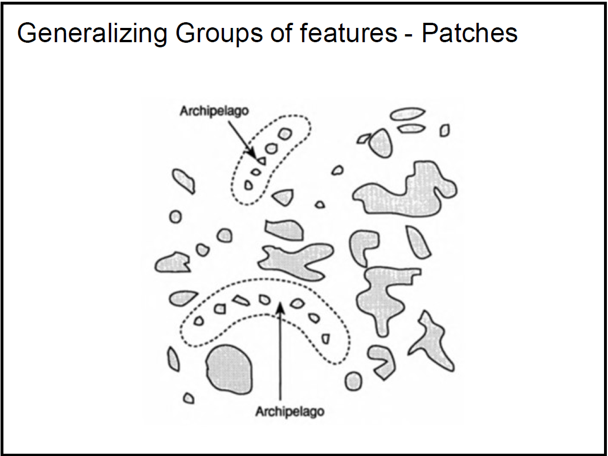
Coastline Examples
The Florida coastline can be measured at different scales. The larger the scale, the longer the perimeter.
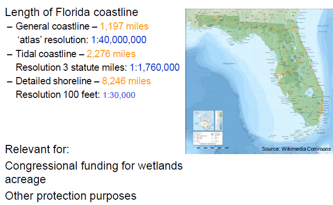
The Modifiable Areal Unit Problem (MAUP)
The MAUP is a central problem in geographical data that needs to be understood.
The problem can be summarized by two effects:
- size effect
- zoning effect
Aggregate values from groups of polygons depend on size (size effect) and shape (zoning effect) of the aggregated polygons and can suffer from statistical bias.
- Aggregation changes statistical characteristics
- Study by Openshaw and Taylor (1979) found the percentage of elderly voters and the number of Republican voters in counties of Iowa correlations between 0.98 and -0.81 with varying aggregation levels of counties.
Analytical Scale
What is the correct size of analytical scale?
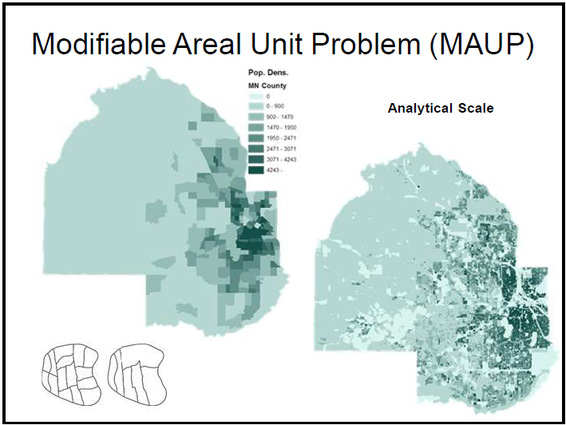
There are multiple proposed solutions to finding this solution, including sensitivity testing, which checks for robustness or variation at different scales. Spatial auto-correlation is ant
Scale Effect
- Different analytical results at levels of aggregation: as we increase or decrease resolution, the statistical characteristics change.
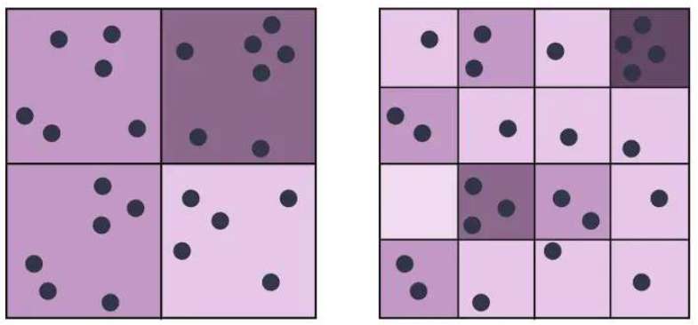
Zoning Effect
- Different groupings by various artificial boundaries, each boundary variation yields major analytical differences
- Examples:
- health spatial statistics to determine spatial factors realted to given disease
- demography
- landscape ecology
- gerrymandering
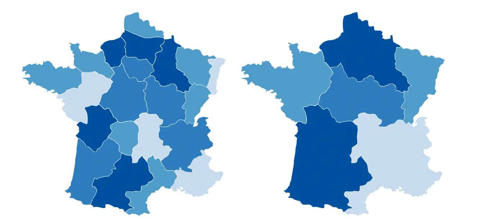
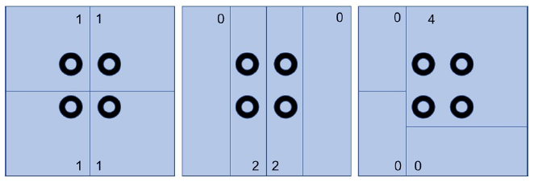
Solutions
Essentially, a population suffers from MAUP due to the population not being uniformly distributed by density over locations.
- spatial autocorrelation (no random distribution)
- across different scales: check for robustness or variation
- if results are significantly different, reevaluate to find more consistent results
- across-scale relationship evaluation between variables; simulations and spatial models
- avoid erroneous conclusions
- provide guidance to select appropriate aggregation scales
Further Examples
Scale and Zoning Effect Together
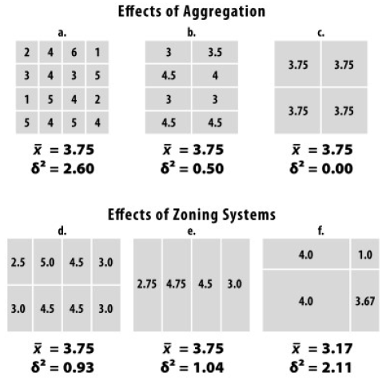
Gerrymandering
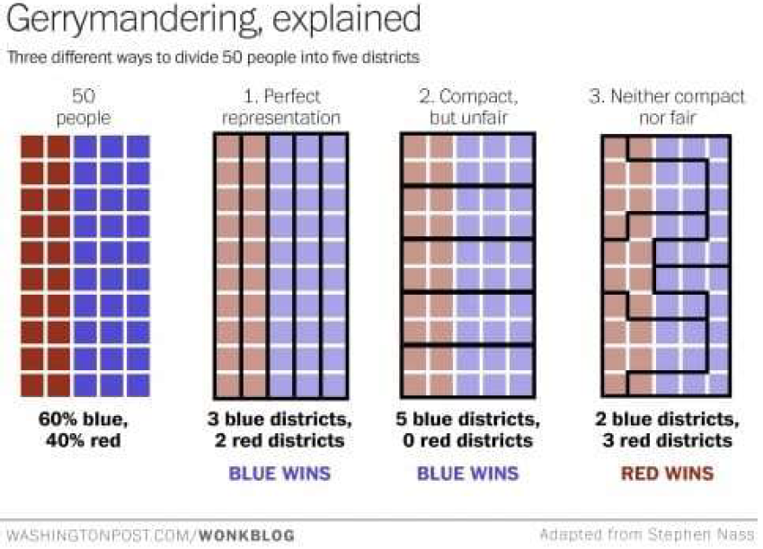